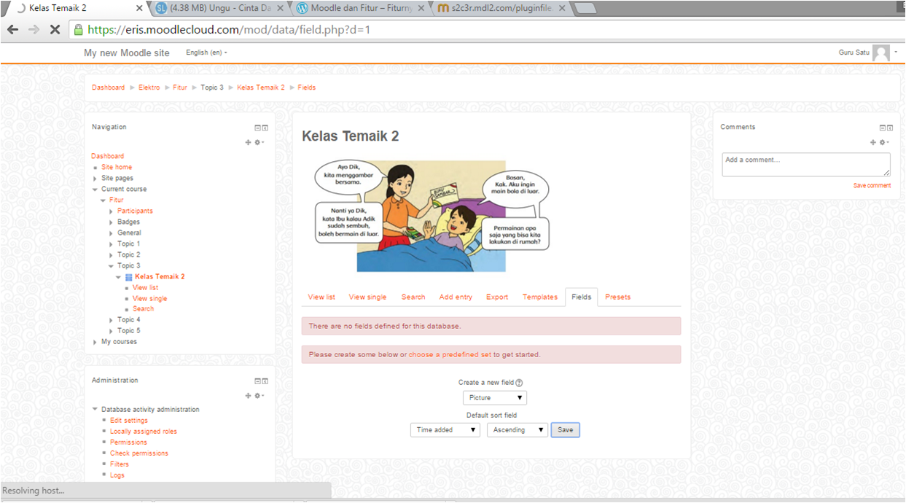

Cara Kerja
Langkah pertama :
Guru login pada Moodle. Kemudian, memilih fitur DATABASE yang terdapat pada fitur Moodle.
Setelah itu, add new pada database untuk memasukkan file, gambar atau video.

Pada database tersebut, di isi gambar tematik yang akan menjadi isi pada database.
Kemudian di save and display.

Kemudian create new field "Text Input"
Data text yang telah dimasukkan, yaitu field : Siswa 1 dan Siswa 2.
Database tematik 2 telah dibuat.